我的游戏前半生
文章目录
这篇文章充斥着大量的个人回忆，错漏难免，没有深度、没有干货，请看官见谅。
当我们讨论游戏程序的时候我们在讨论什么？
- 游戏应用——Game Application，手机上直接运行的游戏，比如：Invasion、Brutal Age
- 人——Programmer，把游戏制作人策划的想法和各种资源整合起来，实现成能在设备上运行的游戏应用的人
话说自上古时代 Computer 发明以来，越来越多的工作需要用 Computer 才能完成。有那么一群想在上班时间摸鱼的人对不能用 Computer 摸鱼表示强烈不满，甚至扬言如果 Computer 不能摸鱼还要它何用，不如卖了换钱。有一群善良的 Programmers 听到了上帝的召唤：“要能摸鱼！”，于是就有了世界上第一批 Game Programmers。
以上纯属胡诌，娱乐是人吃饱后的天性，就算把人扔到空无一物的监狱里也能想出摸鱼的方法来。
我只想说明一点，我国社会主要矛盾已经转化为人民日益增长的美好生活需要和不平衡不充分的发展之间的矛盾。
从游戏程序的诞生就可以看出，策划、美术、音乐、运营等等这些岗位都是游戏开发发展到一定阶段衍生出来的岗位，最早兼职策划美术音乐项管的大部分是程序员。因为早期还没有游戏引擎甚至没有显卡的年代，只有程序员才懂得如何在那些该死的屏幕上通过拼像素点儿显示出想要的图形。像这样：
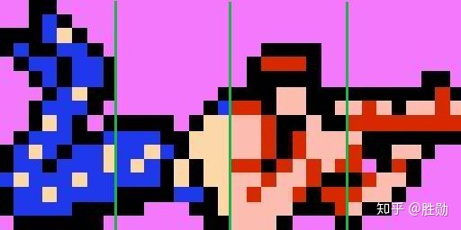
我的游戏前半生
典型的游戏机的历史能在网上找到一大堆，我就不班门弄斧了。重点回忆下我的游戏及程序的经历。
1991、1992 年，放学去最早的游戏机房玩 FC(NES) 上的魂斗罗、双截龙 2，没钱的时候就看别人玩。

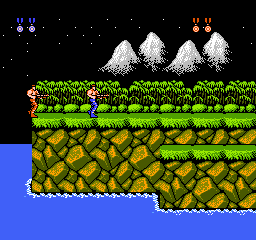
1993 年，有了我第一台个人电脑，CPU 8086，640KB 内存，无硬盘，3.5 寸软驱支持 1.44MB 软盘，用电视机当显示器。操作系统是 MS-DOS 3.3。那几年我开始进入程序员的大门，自学了 GWBasic，最好的成绩就是照着书用字符模式做个打飞机。比下面这个图还 Low 很多：
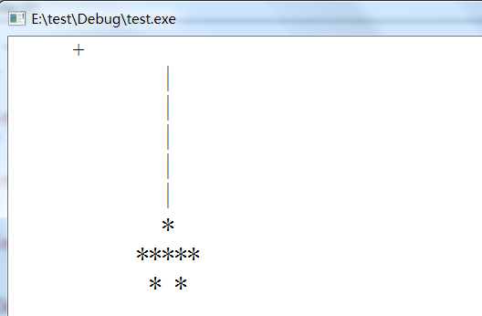
比现在用 Unity 做各种 NB 作品的小朋友差太远了。
8086 基本上是最老的 PC CPU，内存寻址空间 20bit，因此只支持 1MB 内存(1024MB = 1GB，现在手机的内存都 4GB 起)，最高时钟频率 10 MHz。 8086 使用了大约 20,000 个晶体管，制造工艺为 3.2μm = 3200nm。最为对比，2020 年苹果首款自研 Mac 芯片 M1，5nm 工艺打造，集成 160 亿个晶体管。
当时在 DOS 下面操作系统启动完成后只剩 600KB 左右内存，居然还有波斯王子可以玩，可以想像老程序员对硬件资源是怎样地敲骨榨髓。
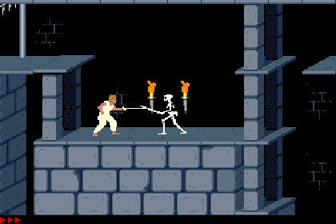
DOS 时代还没有像 OpenGL、DirectX 这样统一的图形接口，图形渲染主要通过直接写显示存储器。显示存储器中存放着在屏幕上显示的图像数据，显示卡硬件不停地将显存中的内容显示在屏幕上。在 VGA 13H 图形模式下，显示内存每个 Byte 对应屏幕上的一个像点，320x200 的屏幕分辨率共需要 64000 个字节，刚好 64KB。嗯，那会儿大部分游戏的分辨率是 320x200，256 色。
后来到我妈工作单位的电脑房见到 32bit CPU 80386 的机器，居然有 4MB 内存，10MB 硬盘，运行速度也达到了 33MHz。从此以后我就对家里 8086 的机器分外不满，到处去蹭同学的 386/486 玩。我最喜欢的大航海时代 2：
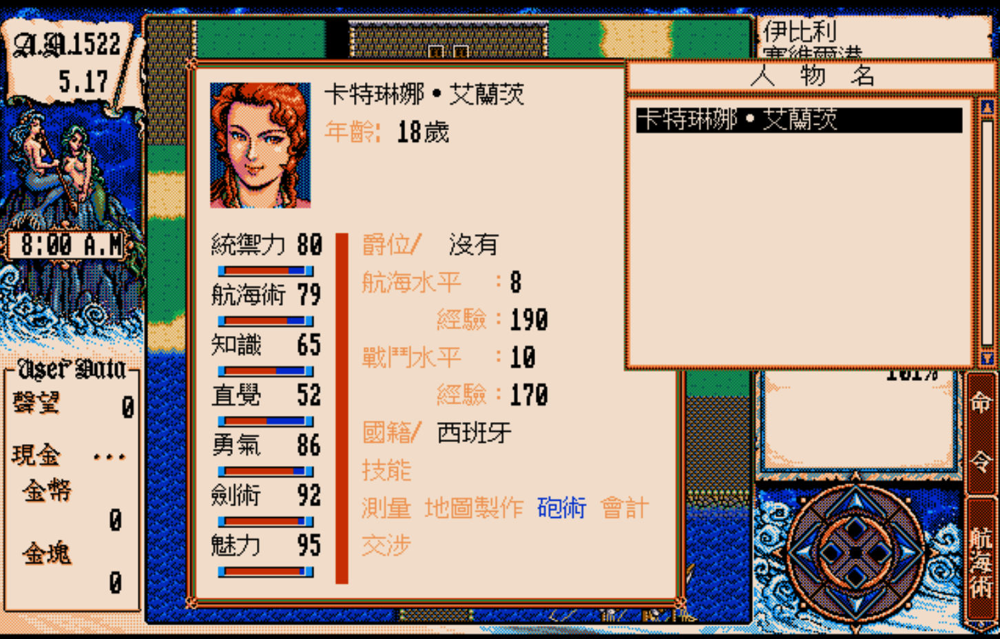
80386 主要有两大工作模式：实模式、保护模式。实模式为 DOS 系统的常用模式，直接内存访问空间被限制在 1MB ；保护模式下 80386-DX 可以直接访问 4G 字节的内存，并具有异常处理机制。为了突破 1MB 内存的限制，DOS 下的游戏开发就必须采用保护模式来访问内存，所以 DOS 后期的游戏经常会看到 DOS/4GW 的可执行文件，这个程序就是通过保护模式给 DOS 增加访问 64MB 内存地址空间的能力。
这个年代出现了天才程序员 John Carmack 以及他划时代的作品，Doom：

这个 FPS 作品引爆了一个行业：3D 图形技术及其相关的周边，比如 3D 显卡、3D 引擎、3D 美术等等。不客气的说，现在游戏行业里的大量工种都跟这个游戏有极深的渊源。
1996 年，3dfx 发布了 Voodoo 3D 显卡，这款显卡在 PC 市场具有碾压竞争对手的优势。我也是第一次听说 3D 这个词，做梦都想试试真正的 3D 游戏（那时候我还没见过 Doom）。给大家看看当时的 3D 渲染对比图：
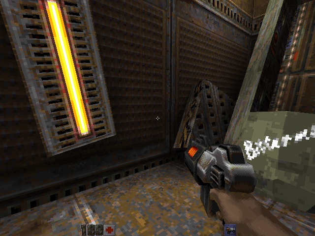
没用硬件加速渲染的《Quake2》
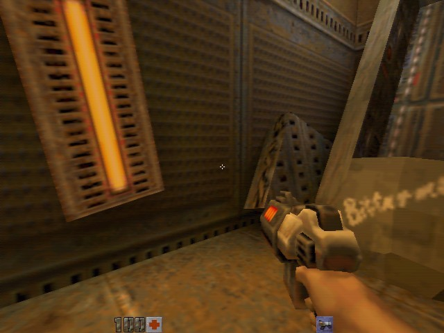
使用 3dfx 卡渲染后的《Quake2》
Voodoo 的显卡 API——GLIDE 差一点儿成为事实上的标准，当时高达 90%的游戏优先支持 GLIDE，微软的 Direct3D 还不入流。2000 年 3dfx 被 Nvidia 收购，坊间传言微软为了推 D3D 力挺 Nvidia，不过 3dfx 一炮而红后管理不善才是它快速陨落的核心原因。
我的后高中时代主要是在 PS 上玩红警，这也是我玩的第一个联机游戏。在游戏机房租两台 PS，通过对战线直连。这其中的通信、同步等开发技术直到我做联网格斗游戏的时候才真正理解透。
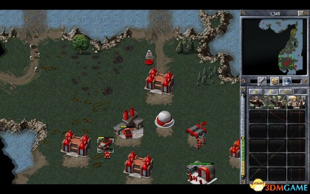
大学期间玩的最多的是星际争霸、帝国时代、还有用 WinKawaks 玩 NeoGeo 街机版的拳皇 98。
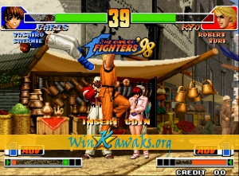
是的，虚拟机这类技术早就在游戏领域应用甚广了，它的复杂之处其实是性能优化。当 PC 的性能远远超过几年前的街机的时候，做个模拟器也是轻而易举的事。
毕业后终于有机会进入游戏行业，第一次跟网游最近的工作就是脱机外挂，那个时候大陆的网游还被韩国网游统治着，我们的产品也是基于韩国游戏。这个脱机应该是我做过甚至见过的最复杂的脱机。它的 NB 之处在于我们用 C++ Builder 重新实现了一遍游戏客户端的主逻辑，并且为了自动挂机，把原游戏里的 3D 地图全部载入进来，在上面手工生成导航网格，地图内寻路使用 A*，地图间寻路使用 Dijkstra 算法。AI 使用基于优先级的有限状态机。
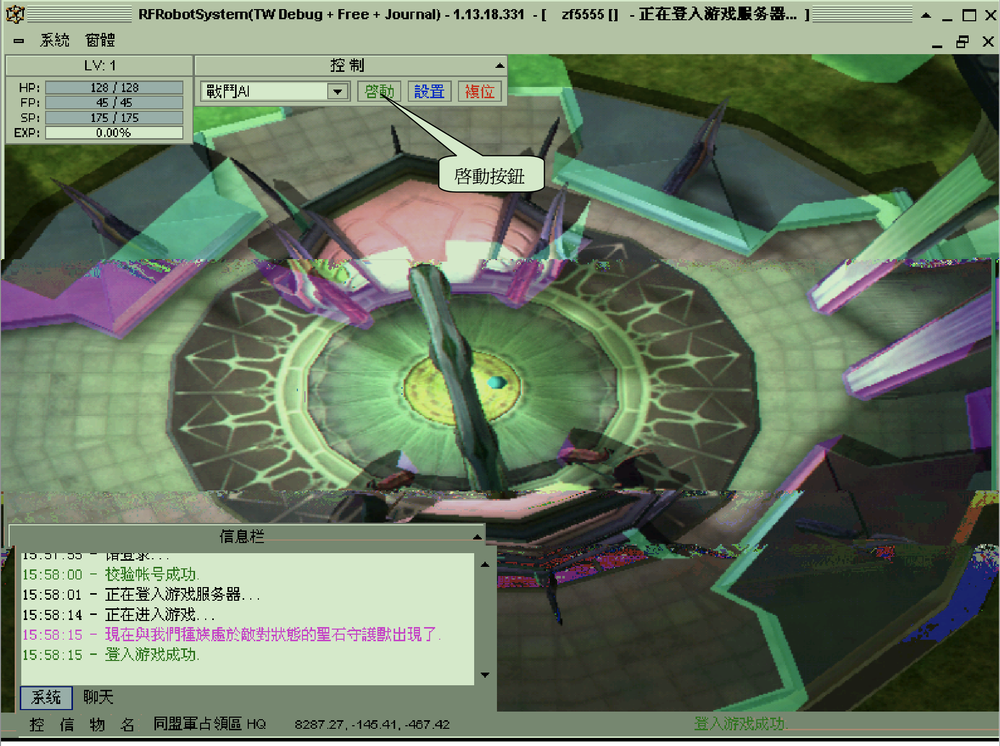
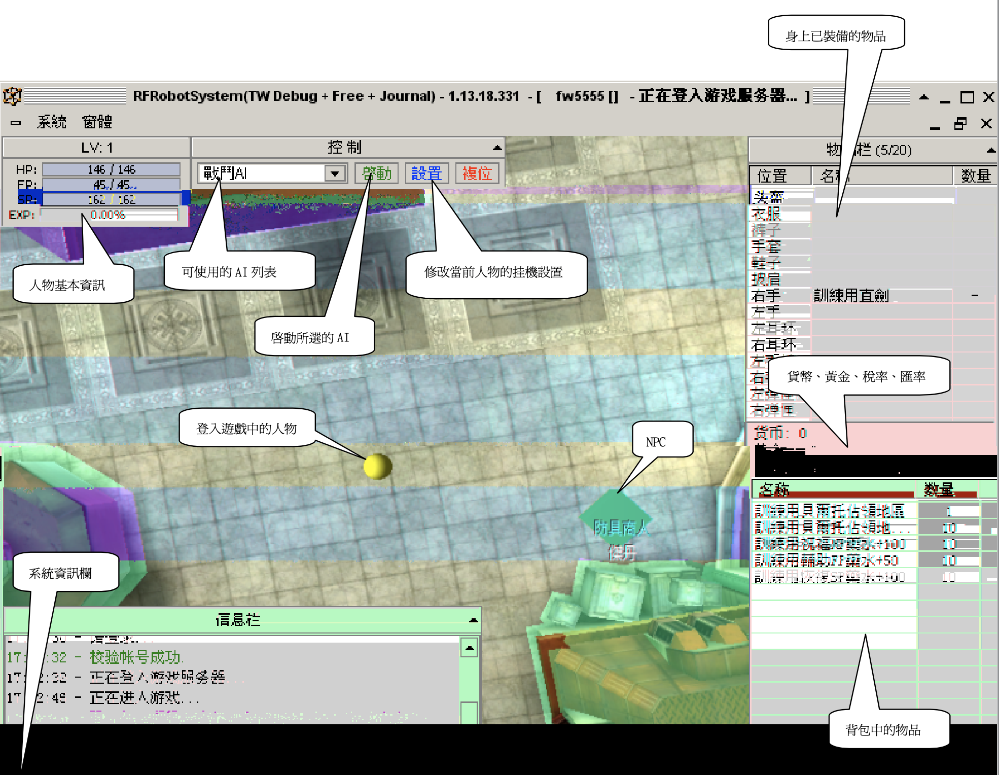
最终的效果是用户可以在脱机工具上全自动打怪升级跑商攒钱，也可以手动移动商店购买等等操作。
这个年代的游戏资源保护都做的很差，美术资源很多都是原始资源，服务器也没什么防御式编程。有一次我们通过游戏协议让服务器构造了个客户端没有美术资源的怪，导致整个服务器所有玩家掉线。
一年后有幸加入盛大，跟随了功夫小子这款游戏上线前到上线很长一段时间。
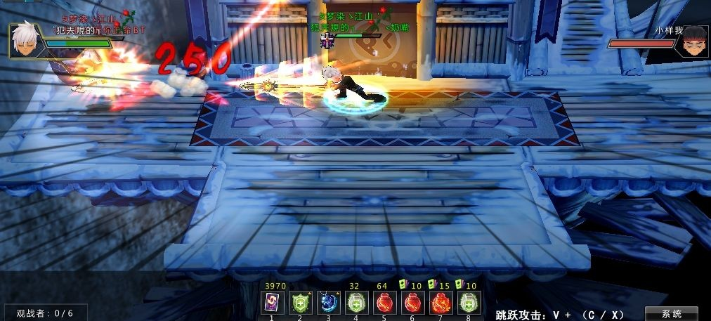
当时的程序开发是不分客户端服务器的，主语言是 C++，我加入后把 Lua 集成到客户端作为 AI 脚本给功夫小子添加了不少 PVE 的内容。客户端使用的渲染引擎是当时非常著名的 RenderWare，这是个很奇特的引擎，是我见过的唯一的非面向对象的 3D 引擎。它的接口调用方法就像 C 语言调用法，和直接调用 DX 或 OpenGL 非常像，现在回想起来似乎只是比 DX 更高层次的封装。没过多久 RenderWare 就被 EA 收购再也没有对外开放过。
这期间还有件印象深刻的事，2008 年网易的梦幻西游再创新高，同时在线人数突破 200 万。同时在线啊同学们，可不是 DAU，DAU ≈ 同时在线 x 10。截至 2008 年 6 月底，我国网民数量达到 2.53 亿，每天玩梦幻西游的就有 2000 万。这件事让我更加坚定了要在游戏行业持续深挖。
再过了几年，我们一部分核心成员出来创业成立了自己的公司，还是做网络动作游戏，2012 年上线了狂刃：
客户端使用 Ogre 作为 3D 渲染引擎，CEGUI 做 GUI 交互，Lua 作为客户端业务逻辑脚本；服务器使用 C++做底层框架，这次把 Lua 也嵌入了服务器，和客户端同架构、代码共用。程序员除了有专门的 3D 引擎工程师外其他人还是不分前后端的，每个功能模块由一个人开发所有客户端服务器代码。我们做了大量的编辑器，场景编辑器、特效编辑器、AI 编辑器、UI 编辑器、动作编辑器等等。客户端尽量做到所见即所得，编辑器导出的资源可以不经程序直接由美术策划在游戏中看最终效果。客户端内置了控制台调试器，开发测试时遇到 BUG 可以立刻打断点现场调试。
我们想尽各种办法来提高开发的并行度，减少阻塞等待，提升开发效率。然而我们的游戏并不是顶尖品质，在第一次公测后数据没有起色，很快就泯然众人矣。我知道，PC 客户端网游的时代已经过去了！（其实当时以为 PC 游戏的时代过去了，哪想到几年后又有 Steam 焕发二春）
我加入了 Tap4fun……
PS：Unity 时代，以前需要我们自建的编辑器都内置了，然而现在我们的开发效率有提高么？
如今的游戏开发岗位和流程
游戏行业经过了这么多年的发展，已经非常成熟，分工也非常细致，这是我从知乎上借的图：
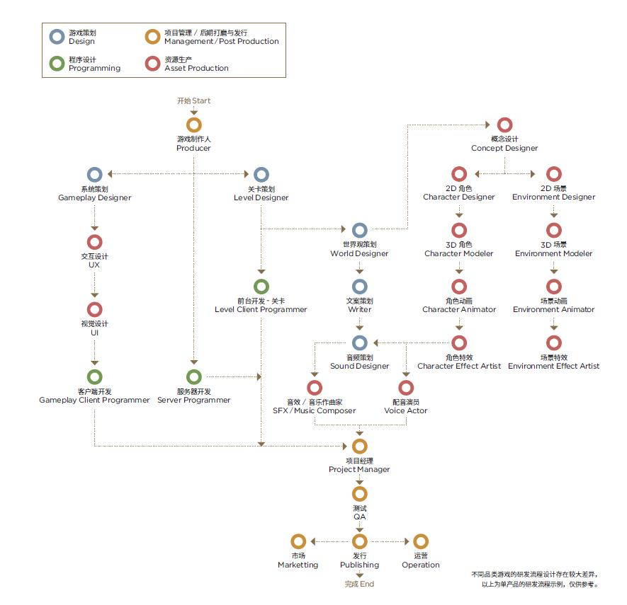
看到这么复杂的岗位和流程图，想想小时候玩的各种可玩性非常高的游戏现在只能称之为独立游戏，恍如隔世！
文章作者 Fan
上次更新 2021-02-12 (7cfec4e)